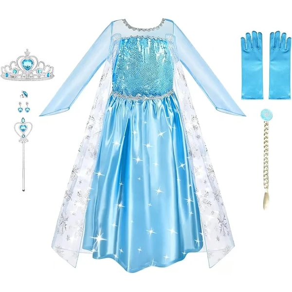
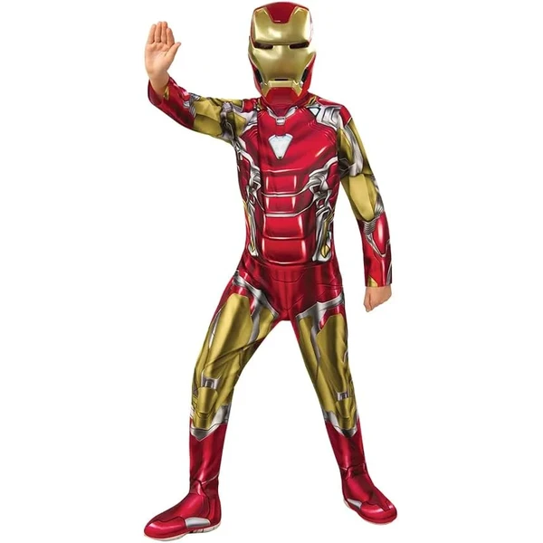

Los disfraces disparan la imaginación a partir de los 3 años, cuando el niño empieza a meterse de lleno en el juego de roles. Convertirse en superhéroe, médico, princesa o bombero le permite explorar personajes, emociones y situaciones desde un lugar seguro y divertido. Para esta edad conviene elegir disfraces cómodos, de tejidos suaves y fáciles de poner y quitar. No hace falta esperar a una fecha concreta: se disfrutan todo el año. En esta selección encontrarás disfraces adaptados a los 3 años.
¿Qué desarrollan los disfraces?
Disfrazarse es una forma de ensayar el mundo adulto y de dar salida a la imaginación.
- Juego simbólico
- Imaginación
- Expresión emocional
- Habilidades sociales
- Lenguaje
- Creatividad

Vicloon Disfraz Princesa Bella
Un vestido amarillo de princesa con hombros al descubierto y falda voluminosa, inspirado en el clásico cuento de la bella y la bestia. Incluye tiara, varita, pendientes, collar y guantes a juego.
⭐ ¿Por qué nos gusta?
- ✔ Set completo con tiara, varita, collar y guantes.
- ✔ Falda voluminosa con acabado satinado.
- ✔ Ideal para fiestas temáticas y disfraces de cuento.
💬 Lo que más destacan las familias
Lo que más suele gustar es que el set viene completo, así que no hace falta añadir nada más para que la niña se sienta disfrazada de verdad. La falda voluminosa también gusta mucho a la hora de girar y jugar a ser princesa.
Ver en Amazon

URAQT Disfraz Princesa de Hielo
Un vestido azul de princesa de hielo con capa de tul bordada con copos de nieve brillantes, mangas largas y cuerpo con lentejuelas. Incluye corona, pendientes, guantes y varita a juego.
⭐ ¿Por qué nos gusta?
- ✔ Capa larga con copos de nieve brillantes.
- ✔ Set completo con corona, guantes y varita.
- ✔ Mangas largas, cómodo también en invierno.
💬 Lo que más destacan las familias
Los compradores valoran especialmente el brillo de la capa, que le da un aspecto muy vistoso en cuanto se pone en movimiento. Las niñas fans de las princesas de hielo suelen quedarse encantadas nada más verlo puesto.
Ver en Amazon

URAQT Disfraz Princesa de Hielo con Trenza
Una variante del disfraz de princesa de hielo, con el mismo vestido azul de capa brillante, a la que se añade una trenza postiza a juego entre los accesorios.
⭐ ¿Por qué nos gusta?
- ✔ Incluye trenza postiza a juego con el vestido.
- ✔ Mismo diseño brillante de capa con copos de nieve.
- ✔ Set completo con tiara, pendientes y guantes.
💬 Lo que más destacan las familias
Un detalle que aparece una y otra vez es lo mucho que gusta la trenza postiza, porque permite completar el peinado sin tener que buscar otro accesorio aparte. El resto del disfraz mantiene el mismo brillo que sus fans ya conocen.
Ver en Amazon

Rubies Disfraz Spider-Man Classic
Un mono de una pieza con el estampado clásico de Spider-Man, cubrebotas y máscara incluidos, con licencia oficial Marvel. Cierre trasero de velcro para facilitar vestirlo.
⭐ ¿Por qué nos gusta?
- ✔ Licencia oficial Marvel, diseño fiel al personaje.
- ✔ Incluye cubrebotas y máscara.
- ✔ Cierre de velcro, fácil de poner y quitar.
💬 Lo que más destacan las familias
Entre los comentarios más habituales aparece lo cómodo que resulta el mono de una sola pieza, ideal para que los niños se muevan y jueguen sin trabas. También se nota el entusiasmo al ponerse la máscara y sentirse el propio superhéroe.
Ver en Amazon

Rubies Disfraz Capitán América
Un mono de una pieza en rojo, blanco y azul con el escudo estampado del Capitán América, cubrebotas y máscara incluidos, con licencia oficial Marvel.
⭐ ¿Por qué nos gusta?
- ✔ Licencia oficial Marvel, con escudo estampado.
- ✔ Incluye cubrebotas y máscara a juego.
- ✔ Testado bajo normativa europea de seguridad.
💬 Lo que más destacan las familias
Se repite bastante el comentario de que aguanta bien el uso intenso, algo de agradecer cuando el disfraz se convierte en la ropa favorita durante semanas. El parecido con el traje de las películas es otro de los puntos que más gusta.
Ver en Amazon

Rubies Disfraz Iron Man
Un mono de una pieza en rojo y amarillo con los detalles impresos de la armadura de Iron Man, cubrebotas y máscara de plástico incluidas, con licencia oficial Marvel.
⭐ ¿Por qué nos gusta?
- ✔ Licencia oficial Marvel, detalles de armadura impresos.
- ✔ Incluye máscara de plástico y cubrebotas.
- ✔ Cierre de velcro trasero, fácil de colocar.
💬 Lo que más destacan las familias
Quienes lo han probado destacan lo fácil que resulta ponérselo gracias al velcro trasero, algo práctico para los más impacientes por salir a jugar. Los detalles de la armadura suelen ser lo primero que los niños enseñan a todo el mundo.
Ver en Amazon